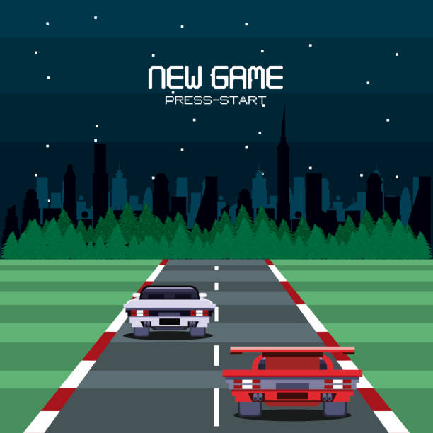
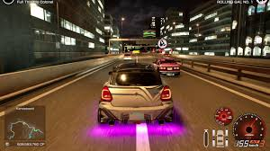

What Inspried Us
This project was inspired by our passion for car culture. For us, racing has never been just about speed, it’s about precision, rivalry, and the dedication it takes to take every corner. We were especially inspired by the unique personalities of global cities like Tokyo, London, and Monaco. Each location offers a completely different feeling: Tokyo’s neon-lit intensity, London’s blend of history and modern edge, and Monaco’s luxurious coastal roads.

We wanted to capture those identities and transform them into unforgettable racing experiences.How The Idea Started
The idea began with a simple question within our team: what would our dream racing game look like? That conversation quickly evolved into early sketches, gameplay concepts, and technical experiments. We didn’t just want to create another racing title, we wanted to build a global experience that felt immersive and alive. As discussions grew more ambitious, so did the scope of the project. What started as a concept gradually became a long-term commitment to building something truly special for racing fans.
Eary Challages We Faced
Bringing this vision to life was far from easy. Recreating multiple international cities with a level of detail we were proud of required years of refinement. Every street layout, lighting system, and environmental detail had to feel authentic. Perfecting driving physics while keeping the gameplay exciting was another major challenge. We also had to make difficult creative decisions, refining features and sometimes stepping back from ideas that didn’t fully align with our core vision. Those challenges ultimately strengthened the game and pushed us to raise our standards at every stage of development.
How The Vision Evovled

Over the past five years, our vision was beyond creating a simple racing game. It evolved into building a world centered around competition, creativity, and mastery. As development progressed, we realized this project wasn’t just about cars or cities, it was about delivering moments players would remember long after they crossed the finish line. Our focus shifted from just technical achievement to creating a complete experience that feels immersive, cinematic, and rewarding. What began as a dream gradually tformed into the best project our team has ever undertaken.
In Development
Currently the devloping team behind celtec games is creating one of the best racing games that has ever been released. Our development team have been with this game for over 5 years, perfecting every little detail to ensure the game is the best for our fans. The game will be more story based. However, there is a mulitplayer where you can race your friends or drive around the streets of Tokyo. We can't tell you much about the game but what we can tell you is that it is baced in tokyo, London, and monico. This game will be released to the world on Decemeber 1st 2026. Stay up to date by checking our website to see new teasers and trailers that will be coming out soon! To also stay up to date with us you can follow our social media accounts. At the bottom of each page you can find a link to our social media accounts.
The countdown to December 1st, 2026 begins now. The streets are waiting.
© Celtec Games